Weather joins the forecast
Temperature, conditions, feels-like, daily highs and lows, and rain chance. Compare up to 10 days of weather and dew point with colored forecast bars.
Meet JustDew 2.0.0
Dew point first.
Weather when you need it.
Know how the air feels now, find your comfortable hours, and see what’s ahead. A fresh design brings dew point and weather together across your Apple devices.
Free. No subscriptions.
iPhone · iPhone Duo · iPad · Mac · Apple Watch
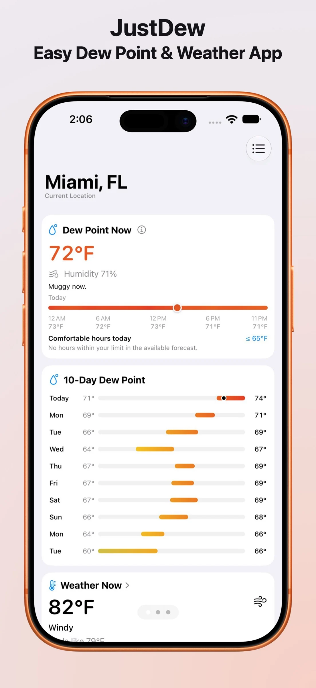
Clearer cards. More useful context. Still dew point at heart.
Current conditions and forecasts, with details just a tap away.
New widgets and layouts that adapt, from wrist to wide open.
A little more insight
Dew point tells you how much moisture is in the air. JustDew turns that into a forecast you can use.
Temperature, conditions, feels-like, daily highs and lows, and rain chance. Compare up to 10 days of weather and dew point with colored forecast bars.
A quick summary tells you whether the air is dry, comfortable, or muggy. Set your dew point limit to find comfortable hours remaining today.
Tap the weather card on iPhone, iPad, or Mac for the next 24 hours of rain chance, wind, gusts, and UV. The main screen stays simple.
Understand the colors. Tap the dew point reading or info button on iPhone, iPad, or Mac for the color legend and a short explanation of dew point versus humidity.
Your forecast, at a glance
Choose separate dew point and weather widgets, or put both in one. Small, medium, and large sizes fit your Home Screen or Mac desktop, with Always Dark options and current or saved locations.
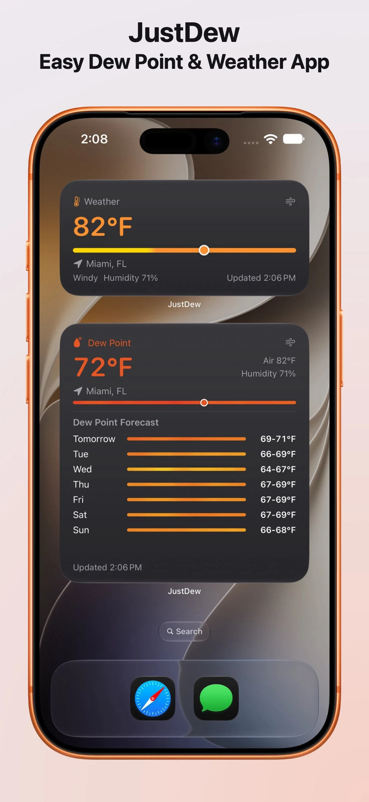
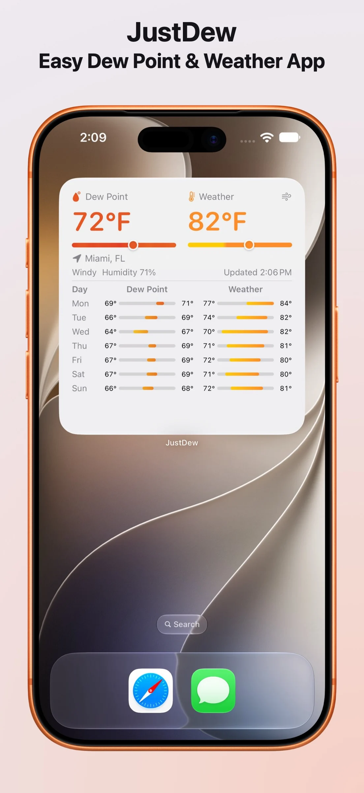
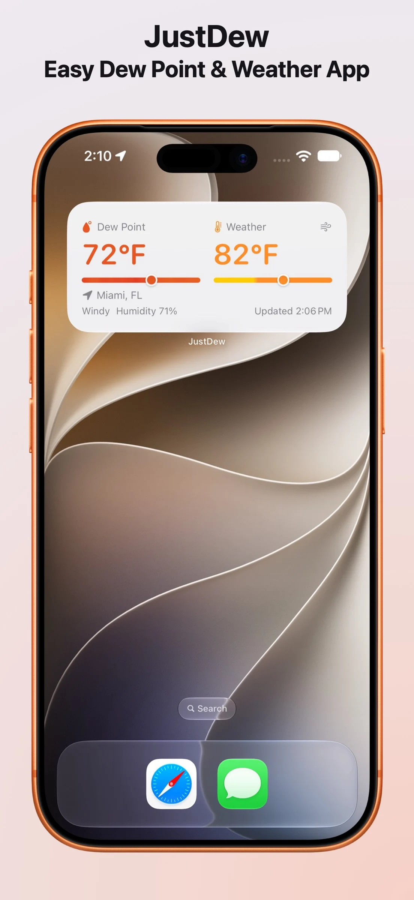
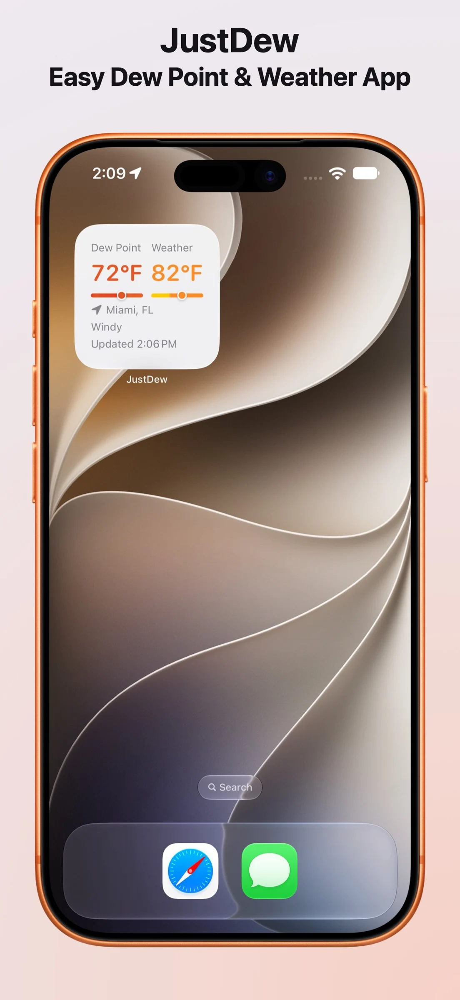
Built to adapt
JustDew adapts to iPhone Duo in portrait and landscape. Partially folded layouts keep cards on either side of the hinge, with synchronized scrolling. Unfold for a spacious view of dew point and weather together.
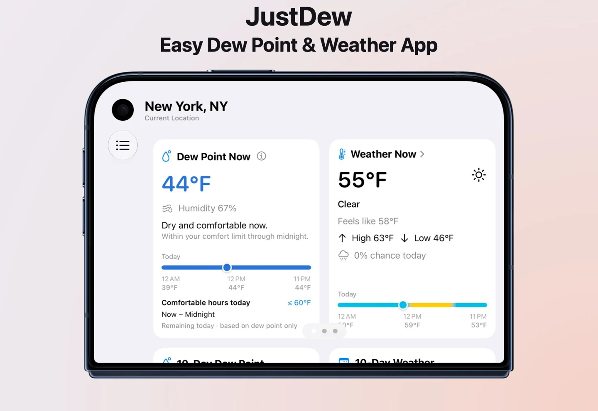
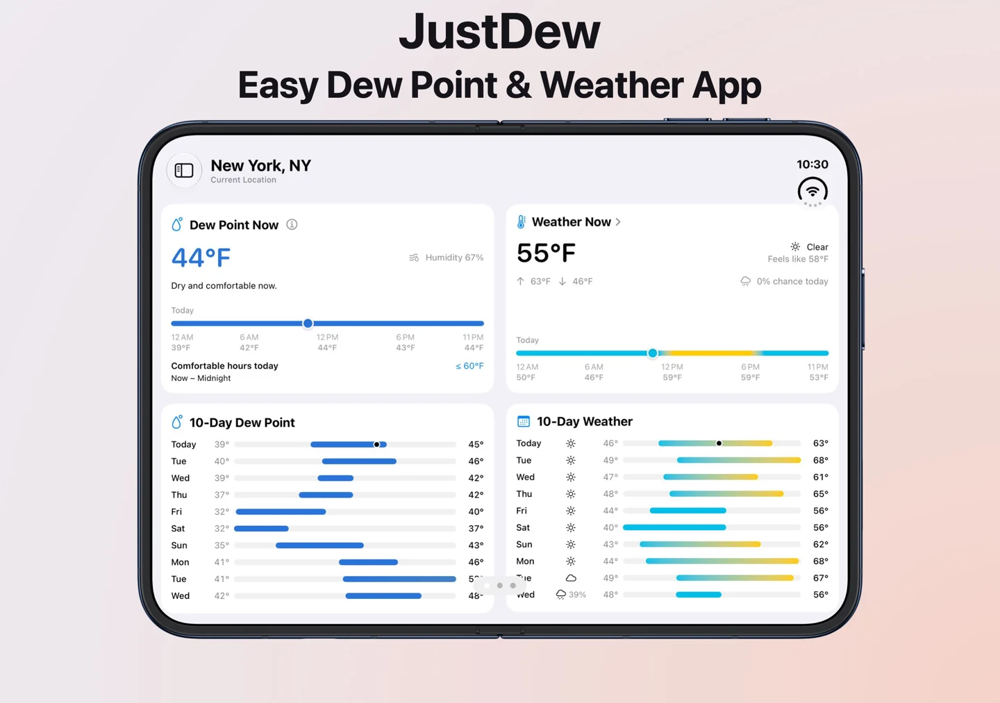
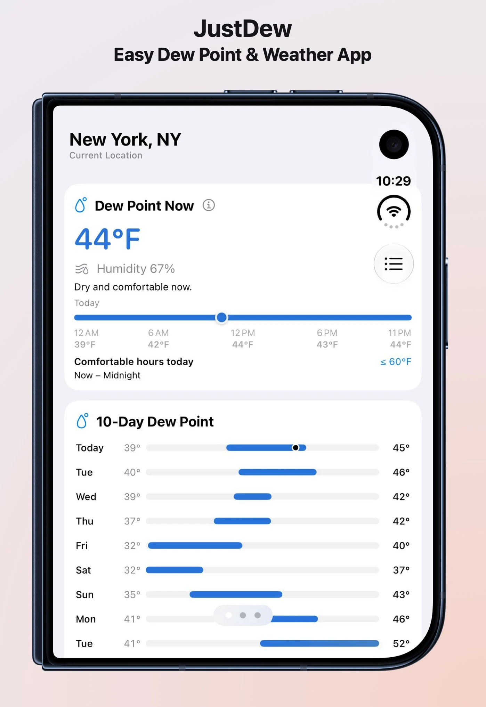
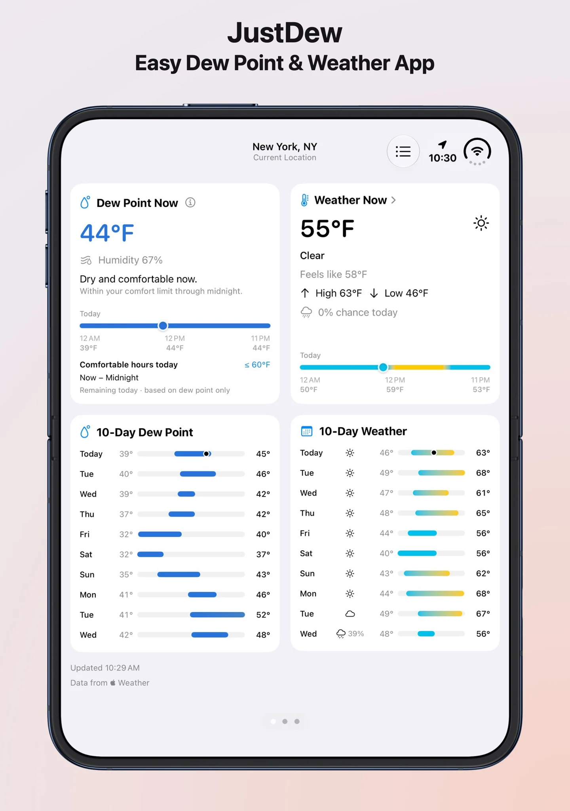
Room for the whole picture
Flexible columns put current readings and daily forecasts side by side. Browse saved cities in the native sidebar. On Mac, hourly weather opens in a compact table that’s easy to scan.
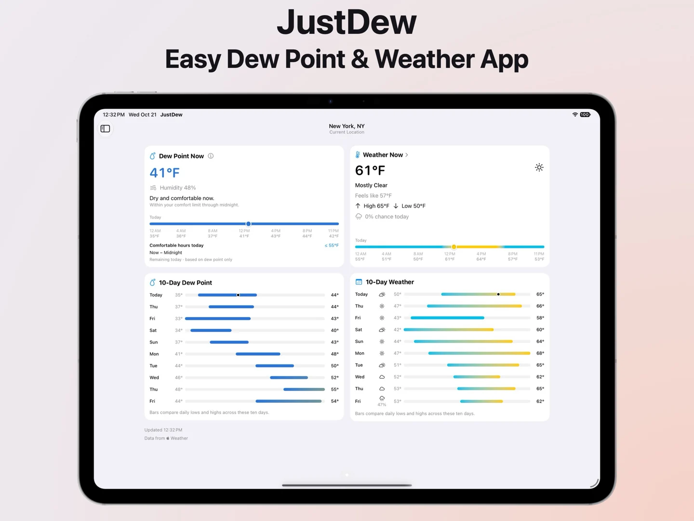
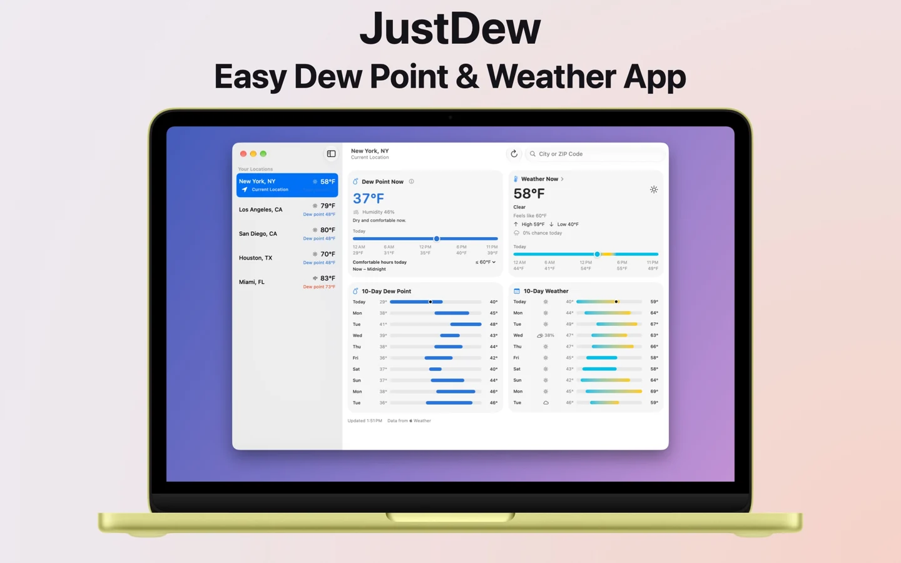
Right on your wrist
The Watch app now includes current weather and both forecasts. Compact, unified bars keep the days easy to compare. Add dew point or weather complications for your current location or a saved city.
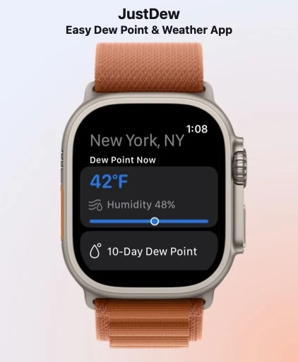
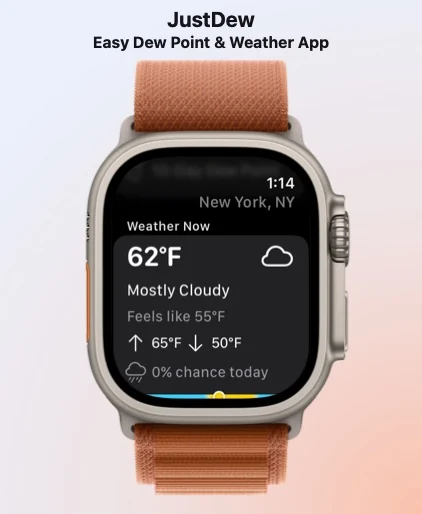
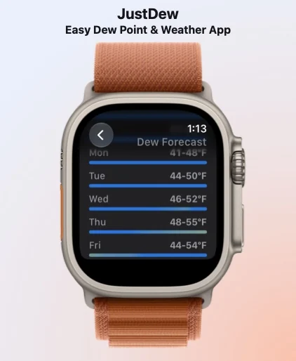
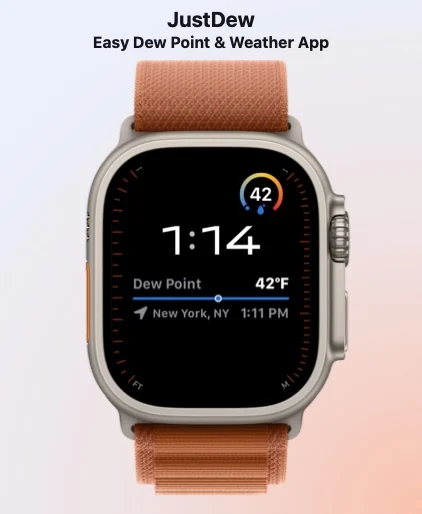
The everyday details
Save multiple cities, swipe between them on iPhone and iPad, and keep Current Location at the top. Saved locations refresh when you launch the app.
Temperature follows your system’s Celsius or Fahrenheit preference. Readings stay familiar in the app and widgets.
No accounts, ads, analytics, or tracking. Saved places and weather caches stay on your device. Weather is provided by Apple WeatherKit.
Read the privacy policyFree. No subscriptions.
JustDew 2.0.0 for iPhone, iPad, Mac, and Apple Watch.